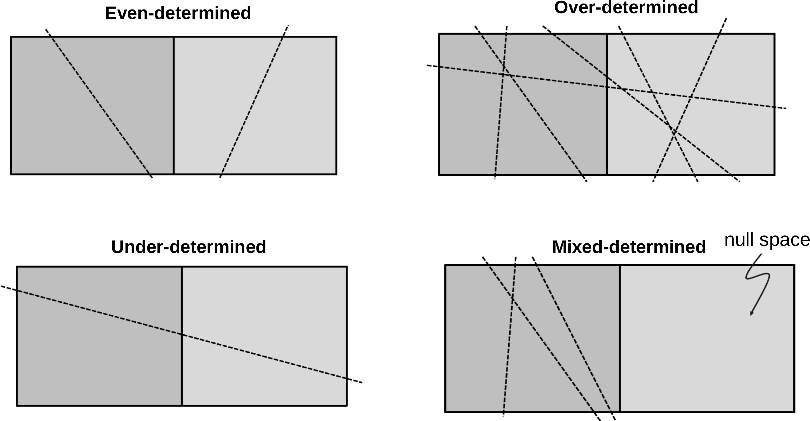

\(\vb f(m)\) is linear with respect to \(\vb m\) \(\Rightarrow\) write as matrix-vector product
\[\vb d = \vb G \vb m + \vb n \]
Gravity, Magnetics, Magnetic Resonance, VSP, straight-ray tomography
\(\vb m = G^{-1}d\) ? No, because is usually not invertible, not even quadratic.
Types of inverse problems
every row stands for a measurement (data point)
every column represents a model parameter
\[\vb d = Gm + n \Rightarrow \vb G\in \mathfrak{R}^{N\times M}\]
\(N\) = \(M\) : even-determined\(N\) > \(M\) : over-determined problem (no existing solution)\(N\) < \(M\) : under-determined problem (no unique solution)mostly: (both over- and) under-determined model parts
Types of inverse problems (Menke, 2012)

A simple matrix problem
Let us assume a simple linear problem with two model parameters and three equations (representing data)
\[
\begin{align}
~ m_1 - m_2 = -1 \\
2 m_1 - m_2 = 0 \\
~ m_1 + m_2 = 2.5
\end{align}
\]
whose forward operator can be expressed by a matrix \[ \textbf{G}=\mqty(1&-1\\2&-1\\1&1) \]
We can transform every equation to one parameter being a function of the other
\[m_2 = (d_i - G_{i1} \cdot m_1)/G_{i2}\]
All three equations can be plotted
Show the code
= np.array([[1 , - 1 ], [2 , - 1 ], [1 , 1 ]])= np.array([- 1 , 0 , 2.5 ]); = plt.subplots()= np.linspace(0.65 , 1.1 , 10 )for i in range (3 ):= (d[i] - G[i, 0 ]* m1) / G[i, 1 ]1.0 )1.5 , 2.1 )"$m_1$" )"$m_2$" );
Error bars
If the data \(d_i\) have some data error \(\delta d_i\) , the equation for \(m_2\) \[m_2 = (d_i - G_{i1} \cdot m_1)/G_{i2}\]
does inherit an error
\[\delta m_2 = \delta d_i / G_{i2}\]
Show the code
= plt.subplots()= 0.05 for i in range (len (G)):= (d[i] - G[i, 0 ] * m1) / G[i, 1 ]= dd/ G[i, 1 ]- dy, y+ dy, color= f"C { i} " , alpha= 0.5 )"-" , label= f" { i} " , color= f"C { i} " )1.0 )1.6 , 2.0 )
Show the code
= plt.subplots()= 0.1 for i in range (len (G)):= (d[i] - G[i, 0 ] * m1) / G[i, 1 ]= dd/ G[i, 1 ]- dy, y+ dy, color= f"C { i} " , alpha= 0.5 )"-" , label= f" { i} " , color= f"C { i} " )1.0 )1.6 , 2.0 )
The objective function
We minimize the L2-norm (summed squared distances) of the residual between data and model response:
\[ \Phi = \| \vb d - G m \|^2_2 = \sum\limits_1^N (d_i-g_i({\vb m}))^2 \rightarrow\min \]
Let’s compute the objective function for a range of values for \(m_1\) and \(m_2\) (grid search).
Distance function for the first two data
Show the code
= np.arange(0.65 , 1.1 , 0.01 )= np.arange(1.6 , 2.001 , 0.01 )= np.meshgrid(m1, m2)= plt.subplots(ncols= 3 , sharex= True , sharey= True )= [0 , 0 , 0 ]= [m1[0 ], m1[- 1 ], m2[- 1 ], m2[0 ]]for i in range (3 ):= np.abs (G[i, 0 ] * M1 + G[i, 1 ] * M2 - d[i])= ext, cmap= "Spectral_r" )0 ].invert_yaxis()
If we combine the distances of the first two (the square root of their squares), we observe an elongated minimum similar to that of the two lines alone.
Show the code
0 ]** 2 + Y[1 ]** 2 ), extent= ext, cmap= "Spectral_r" )
Thus, the ambiguity is not much reduced be combining these two similar equations. If we use all three equations, there is a clear minimum of ellipsoidal shape.
Show the code
0 ]** 2 + Y[1 ]** 2 + Y[2 ]** 2 ), extent= ext, cmap= "Spectral_r" )
The minimum pixel (grid spacing of 0.01) lies at (0.82, 1.71). How can we determine the absolute minimum value?
The method of least squares
Derivation
\[\Phi = \| {\vb d}-{\vb G}{\vb m}\|^2_2 = ({\vb d}-{\vb G}{\vb m})^T ({\vb d}-{\vb G}{\vb m}) \]
\[\nabla_m = \qty(\pdv{m_1}, \pdv{m_2}, \ldots, \pdv{m_M})^T\]
\[\nabla_m \Phi = \nabla_m ({\vb G}{\vb m}-{\vb d})^T ({\vb G}{\vb m}-{\vb d})=0\]
\[\nabla_m \Phi = \nabla_m ({\vb m}^T{\vb G}^T-{\vb d}^T) ({\vb G}{\vb m}-{\vb d})=0\]
\[\nabla_m \Phi = \nabla_m {\vb m}^T{\vb G}^T ({\vb G}{\vb m}-{\vb d})=0\]
\[\nabla_m \Phi = {\vb G}^T ({\vb G}{\vb m}-{\vb d})={\vb G}^T {\vb G}{\vb m}-{\vb G}^T{\vb d}=0\]
\[\Rightarrow \quad\quad {\vb m}=({\vb G}^T{\vb G})^{-1} {\vb G}^T{\vb d} ={\vb G}^\dagger{\vb d}\] \[\mbox{mit}\quad {\vb G}^\dagger = ({\vb G}^T{\vb G})^{-1} {\vb G}^T\]
(generalized inverse or Pseudo-inverse pinv, in Matlab/Julia G\d)
The solution \({\vb m}_{LS}={\vb G}^\dagger {\vb d}\) is the least-squares solution
Simple matrix problem - Solution
Show the code
* _ = np.linalg.lstsq(G, d, rcond= None )= plt.subplots()= np.array([0.65 , 1.1 ])= 0.081 for i in range (len (G)):= (d[i] - G[i, 0 ] * x) / G[i, 1 ]= dd/ G[i, 1 ]= f"C { i} " - dy, y+ dy,= co, alpha= .5 )"-" , label= f" { i} " , color= co)0 ], mLS[1 ], "r*" , label= "m-LS" )1.0 )1.6 , 2.0 )
Resolution analysis
How does reality propagate into our image?
What is the quality of the inversion result?
What is the contribution of the individual data?
Model resolution
\[{\vb d}= {\vb G}{\vb m}^\text{true} + {\vb n}\] Matrix inversion with inverse operator \({\vb G}^\dagger\) : \[{\vb m}^\text{est} = {\vb G}^\dagger {\vb d}= {\vb G}^\dagger{\vb G}{\vb m}^\text{true} +
{\vb G}^\dagger{\vb n} = {\vb R}^M {\vb m}^\text{true} + {\vb G}^\dagger{\vb n}\] with the model resolution matrix \({\vb R}^M={\vb G}^\dagger{\vb G}\) \(\Rightarrow\) How is the true model (\({\vb m}^\text{true}\) ) reflected in the estimated (\({\vb m}^\text{est}\) )?
Diagonal of \(\vb R^M\) : resolution of individual parameters (0-1)
Data resolution
\[{\vb m}^\text{est} = {\vb G}^\dagger {\vb d}^\text{obs}\]
How are the data explained by the model? \[{\vb d}^\text{est} = {\vb G}{\vb m}^\text{est} =
{\vb G}{\vb G}^\dagger{\vb d}^\text{obs} = {\vb R}^D {\vb d}^\text{obs}\]
with the data resolution (information density) matrix: \[{\vb R}^D={\vb G}{\vb G}^\dagger\]
Diagonal of \(R^D\) : information content of individual data
Model resolution for overdetermined problems
\[{\vb G}^\dagger=({\vb G}^T{\vb G})^{-1} {\vb G}^T\]
\[\Rightarrow {\vb R}^M = ({\vb G}^T{\vb G})^{-1} {\vb G}^T {\vb G}= {\vb I}\]
perfect model resolution
\[{\vb G}^\dagger=({\vb G}^T{\vb G})^{-1} {\vb G}^T \quad \Rightarrow \quad
{\vb R}^D = {\vb G}({\vb G}^T{\vb G})^{-1} {\vb G}^T\]
Resolution of matrix problem
Show the code
= np.linalg.inv(G.T @ G) @ G.T= Ginv@ G= G@ Ginv= plt.imshow(RD, vmin=- 1 , vmax= 1 , cmap= "bwr" )
3rd row (measurement) is most important
1st and 2nd are highly correlated, sum(diag(RD)) \(\Rightarrow\) 2
Linear regression
Show the code
= np.arange(0 , 3 , 0.1 )- 1 ] = 3.5 = 0.1 = 0.5 - 0.5 * x + np.random.randn(len (x)) * err= np.ones((len (x), 2 ))1 ] = x[:]= np.linalg.inv(A.T @ A) @ A.T= Ainv @ dprint ("m = " , m)= plt.subplots()"b+" )@ m, "r-" )= A @ m - dprint ("mean=" , np.mean(residual))print ("std=" , np.std(residual))print ("X²=" , np.sqrt(np.mean((residual/ err)** 2 )))
m = [ 0.51803119 -0.50901033]
mean= -4.4408920985006264e-17
std= 0.08366116071051583
X²= 0.8366116071051584
Linear regression - data importance matrix
Show the code
= A @ Ainv= plt.subplots(figsize= (7 ,6 ))= ax.matshow(RD, cmap= "bwr" ,=- 0.3 , vmax= 0.3 );
neighboring data points are correlated, opposite anti-correlated
Show the code
= np.diag(RD)sum (rd))"+-" , ms= 5 );
main diagonal of \(\vb R^D\) \(\Rightarrow\) data importance (outside biggest)
sum of importances equals \(M\) (later: rank of matrix)
Errors & robust inversion
error goes into the scaling of \(\vb G\) and \(\vb d\)
sometimes data have different errors
there might be outliers spoiling the result
Error weighting
Unweighted residual norm (root-mean square RMS)
\[\|{\bf d}-{\bf f}({\bf m})\| = \sqrt{1/N\sum (d_i-f_i({\bf m}))^2}\]
Weighting by individual error \(\epsilon_i\) (chi-square value):
\[\chi^2=\frac1N \sum \left( \frac{d_i-f_i({\bf m})}{\epsilon_i} \right)^2 \rightarrow \min\]
In case of exact error estimates: \(\chi^2=1\)
Error weighting
replace \(d_i\) by \(\hat{d}_i=d_i/\epsilon_i\) leads to \[{\bf m}= (\hat{\bf G}^T\hat{\bf G})^{-1} \hat{\bf G}^T \hat{\bf d}\] with \(\hat{{\bf G}}=\mbox{diag}(1/\epsilon_i)\cdot {\bf G}\)
General \(L_p\) norm
The \(L_2\) norm is the rooted sum of squared elements of a vector \(\bf v\) :
\[\Phi^P=\|{\bf v}\|_2=\sqrt{\sum_i v_i^2}\]
More generally, the \(L_P\) norm is computed by \[\Phi^P=\|{\bf v}\|_P=\left( \sum_i |v_i|^P \right)^{1/P}\]
\(L_1\) norm minimization (IRLS)
\[\Phi^1=\|{\bf v}\|_1=\sum_i |v_i|\]
The \(L_1\) norm is much less prone to outliers as the misfit is not squared
By the ratio of its contribution to L1 and L2 norm we can reweight \(\epsilon_i\) \[ w_i = \frac{|v_i|/\|\vb v\|^1_1}{v_i^2/\|\vb v\|^2_2}
= \frac{\|\vb v\|^2_2}{|v_i| \cdot \|\vb v\|^1_1} \]
This is known as Iteratively Reweighted Least-Squares (IRLS)
Linear regression with outliers
Show the code
- 1 ] += 1 = Ainv @ dprint ("m = " , m)= plt.subplots()"b+" )@ m, "r-" )0.5 - 0.5 * x, "m--" )
m = [ 0.42987692 -0.4263657 ]
The misfit distribution
Always have a look at the misfit distribution (not only \(\chi^2\) )
Wrap-up overdetermined problems (\(N>M\) )
objective function \(\Phi\) as squared data misfit
weighting of individual data (unitless, more flexible & objective)
broad minimum of the objective function
grid search to plot \(\phi\) \(\Rightarrow\) only nice for \(M\) =2
least squares method yields
resolution matrices for model (perfect) and data (distributed)
Under-determined problems
specifically \(N<M\) (too less data for the model pameters), but, more general, if the rank \(r<M\)
number of independent columns and rows, i.e. the degree of non-degenerateness.
Example of a mixed-determined problem
\[ \textbf{G}=\mqty(1 & 1 & 0 \\
0 & 0 & 1) \]
\(N\) <\(M\) : clearly under-determined,parameter \(m_3\) is perfectly determined (=\(d_2\) )
any combination of \(m_1\) and \(m_2=d_1-m_1\) fulfils the first equation
Changing the system
\[ \textbf{G}=\mqty(1 & 1 & 0 \\
0 & 0 & 1) \]
adding data 1+2
\[ \textbf{G}=\mqty(1 & 1 & 0 \\
0 & 0 & 1 \\
1 & 1 & 1) \]
does not help, because they are linear dependent (\(rk({\bf G})=2\) ).
Minimum-norm solution
Analog to the least-squares inverse \(({\bf G}^T {\bf G})^{-1} {\bf G}^T\) there is an inverse for under-determined problems:
\[ \bf m = G^T (G G^T)^{-1} d = G^\dagger d \]
that is called minimum-norm solution.
The backslash operator (G\d) yields the minimum-norm solution.
Derivation
From the models fulfilling \(\bf G m=d\) we are looking for the “smallest”
\[ \text{min} \Phi=\bf m^T m \quad\mbox{with}\quad G m=d \]
We use the method of Lagrangian parameters (\(\lambda_i\) ) \[ \Phi = \bf m^T m + \lambda^T (G m - d) \rightarrow \mbox{min} \]
The derivatives vanish
\[ \frac{\partial\Phi}{\partial \lambda} = \bf G m - d=0 \]
\[ \frac{\partial\Phi}{\partial m} = 2\bf m^T + {\bf \lambda}^T G = 0 \]
\[ \Rightarrow {\bf m} = -\frac{1}{2} ({\lambda}^T {\bf G})^T = -\frac{1}{2}{\bf G}^T \lambda \]
from which we can determine the Langrangian parameters
\[ \lambda = -2 ({\bf G G^T})^{-1} \bf d \]
Replacing them we obtain the minimum-norm solution \[ {\bf m}_{MN} = \bf G^T (G G^T)^{-1} d \]
Resolution of the minimum norm inverse
\[ \bf G^\dagger = G^T (G G^T)^{-1} \]
\[ {\bf R}^M = \bf G^\dagger G = G^T (G G^T)^{-1} G \]
\[ {\bf R}^D = \bf G G^\dagger = G G^T (G G^T)^{-1} = I \]
For underdetermined problems, all data are independent and equally important. Model parameters are insufficiently resolved.
Appendix
Derivation (1)
\[\Phi = \| {\vb d}-{\vb G}{\vb m}\|^2_2 = ({\vb d}-{\vb G}{\vb m})^T ({\vb d}-{\vb G}{\vb m}) \] \[\Phi = ({\vb G}{\vb m}-{\vb d})^T ({\vb G}{\vb m}-{\vb d})\]
\[\frac{\partial\Phi}{\partial m} = \frac{\partial}{\partial m} ({\vb G}{\vb m}-{\vb d})^T ({\vb G}{\vb m}-{\vb d}) +
({\vb G}{\vb m}-{\vb d})^T \frac{\partial}{\partial m}({\vb G}{\vb m}-{\vb d}) = 0\]
\[{\vb G}^T{\vb G}{\vb m}- {\vb G}^T{\vb d}+ {\vb G}^T{\vb G}{\vb m}- {\vb G}^T{\vb d}= 0\]
\[{\vb G}^T{\vb G}{\vb m}= {\vb G}^T{\vb d}\quad \Rightarrow \quad {\vb m}={\vb G}^\dagger{\vb d}
\quad\mbox{with}\quad {\vb G}^\dagger = ({\vb G}^T{\vb G})^{-1} {\vb G}^T\]
Derivation (2)
\[\Phi = ({\vb d}-{\vb G}{\vb m})^T ({\vb d}-{\vb G}{\vb m}) = \sum_i \left[ (d_i-\sum_j G_{ij}m_j )(d_i-\sum_k G_{ij}m_j ) \right]\] \[\Phi = \sum_i \left[ d_i d_i - d_i\sum_k G_{ik}m_k - d_i\sum_j G_{ij}m_j + \sum_j G_{ij}m_j\sum_k G_{ik}m_k \right]\] \[\Phi = \sum_i d_i d_i - 2 \sum_j m_j \sum d_i G{ij} + \sum_i \sum_j\sum_k m_j G_{ij}G_{ik}m_j m_k\] \[\Phi = \sum_i d_i d_i - 2 \sum_j m_j \sum_i d_i G{ij} +\sum_j\sum_k m_j m_k \sum_i G_{ij}G_{ik}\]
\[\partial\Phi=\partial m_q = \sum_i\sum_k(\delta_{iq}m_k+m_j\delta_{ik})\sum G_{ij}G_{ik} - 2\sum_j \delta_{iq}\sum G_{ij} d_i = 0\]
\[0 = 2\sum_k\sum_i G_{iq}G_{ik} - 2\sum_i G_{iq}d_i = 2{\vb G}^T{\vb G}-2{\vb G}^T {\vb d}\]
Derivation by change \(t\delta{\vb m}\)
\[\Phi(t) = ({\vb d}-{\vb G}({\vb m}+t\delta{\vb m}))^T ({\vb d}-{\vb G}({\vb m}+t\delta{\vb m}))\] \[\Phi(t) = ({\vb m}+t\delta{\vb m})^T{\vb G}^T{\vb G}({\vb m}+t\delta{\vb m})-2({\vb m}+t\delta{\vb m}){\vb G}^T{\vb d}+{\vb d}^T{\vb d}\] \[\Phi(t) = t^2(\delta{\vb m}{\vb G}^T{\vb G}\delta{\vb m}) + 2t(\delta{\vb m}{\vb G}^T{\vb G}{\vb m}-\delta{\vb m}^T{\vb G}^T{\vb d})
+ ({\vb m}^T{\vb G}^T{\vb G}{\vb m}+{\vb d}^T{\vb d}-2{\vb m}^T{\vb G}^T{\vb d})\] \(\Phi(t)\) has a minimum at \(t=0\) , therefore \(\partial\Phi/\partial t\) must be 0 \[\partial\Phi(t=0)/\partial t = 2(\delta{\vb m}^T{\vb G}^T{\vb G}{\vb m}- \delta{\vb m}^T{\vb G}{\vb d}) = 2\delta{\vb m}^T ({\vb G}^T{\vb G}{\vb m}-{\vb G}^T{\vb d}) = 0\] As this holds for every \(\delta{\vb m}\) , we obtain \({\vb G}^T{\vb G}{\vb m}={\vb G}^T{\vb d}\)